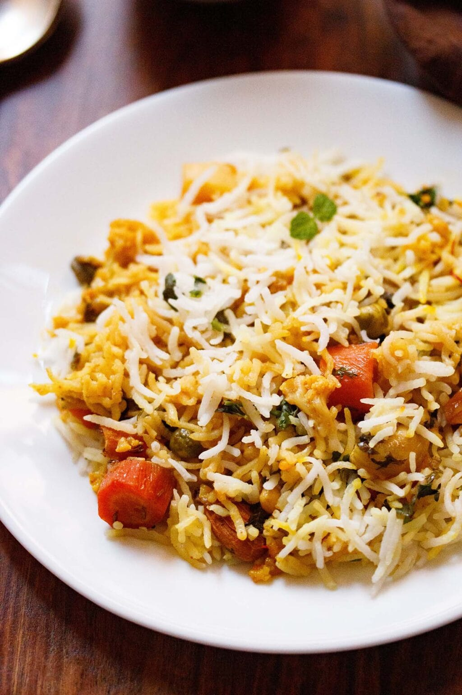

⏱️Prep Time: 45 minutes
⏰Cook Time: 45 minutes
🍽️Servings: 5
🌱Diet: Vegetarian
🟡 Difficulty: Medium
Vegetable Dum Biryani is a Hyderabadi rice dish made by layering basmati rice with a spiced mixed vegetable gravy, herbs, saffron, and kewra water. The pan or pot is sealed and slow-cooked so the rice absorbs all the rich flavors. Each grain turns fragrant, flavorful, and perfectly cooked. This Veg Dum Biryani is known for its rich flavors and royal taste. It truly captures the essence of Hyderabadi cuisine.
Biryani, also spelled biriyani, is one of the most popular rice dishes in India and across South Asia. It’s a layered rice and curry dish where a spiced yogurt based gravy made with meat, vegetables, paneer, or mushrooms is cooked together with partially cooked rice until the flavors blend beautifully.
In most traditional versions, the meat is marinated first, while vegetable biryanis skip this step and are quicker to prepare.

Though biryani is usually layered and slow-cooked, many South Indian versions are made as one-pot dishes, where rice and curry cook together much like a Pulao.
The spices and ingredients vary from region to region. Some use curry leaves, coconut milk, yogurt or black pepper. Thus no two biryanis ever taste the same.
Some recipes also use a ground Biryani Masala, but in this version, whole spices alone bring out the aroma and plenty of flavor.
This Veg Dum Biryani is an authentic Hyderabadi-style vegetarian dum biryani made with basmati rice, assorted mix vegetables, spices, and herbs.
It’s a recipe close to my heart and one I’ve been making for over a decade; loved by family, friends, and readers alike.
Made with patience and care, this Vegetable Dum Biryani needs attention to detail, but the flavor in every bite makes the effort worth it.
My version is loosely inspired by my mom’s recipe and a Jiggs Kalra cookbook I bought years ago. Over time, I’ve refined the ratios and technique to create a biryani that’s light, a bit spicy, and full of aroma.
The caramelized onions, garam masala, and yogurt bring out a perfect balance of flavor, and each grain of rice carries the essence of the masala beautifully.
A traditional biryani is always cooked on dum, a slow-cooking method where the pot is tightly sealed so steam can’t escape. Known as dum pukht, this technique came from Persia and became a hallmark of Mughlai and Hyderabadi cooking.
The rice and curry are layered in a heavy pot, sealed with dough, and cooked over gentle heat so the ingredients steam in their own juices.
This slow process lets the flavors blend deeply and keeps the biryani moist and aromatic. Traditionally, clay pots were used for dum cooking, which also helped retain nutrients and gave the dish its distinct earthy flavor.
Making Hyderabadi Veg Dum Biryani takes a bit of time but the steps are simple once you get into the rhythm. The key is to prepare everything before you start cooking.
Chop the vegetables, soak the rice, and keep the spices ready. This helps the layering and dum process go smoothly.
Follow the steps below to make a flavorful, aromatic Vegetable Dum Biryani that tastes just like the ones served in Hyderabadi homes.
1. First, rinse 1.5 cups of basmati rice (300 grams) in clean water until the water runs clear of starch. You can use a bowl or colander to rinse the rice. Make sure you soak the rice grains in water for 30 minutes after rinsing them.
Tip: If possible try to use aged basmati rice or sella basmati rice (parboiled basmati rice) to make this veg dum biryani.
2. Once the rice has been able to soak for 30 minutes, drain all the water and set aside.
3. While the basmati rice is soaking, use that time to prep the other ingredients. First, you will want to rinse, peel and chop all of the veggies. This will make the process of cooking go by much quicker.
What to use: I have used 3 cups mixed veggies including green peas. You can use your choice of mixed vegetables for your veg dum biryani.
4. After you have organized and chopped all of your vegetables, it is time to cook the basmati rice. You can use any method to cook your rice – microwave, pressure cooking, instant pot or cooking in a pot.
If cooking your rice in a pot, use a deep bottomed pan and add 5 cups water.
5. When the water is hot, add all the spices and 1 teaspoon salt. Here’s what you want to include for your veg dum biryani in this step:
6. After adding the ingredients, bring the water to a boil on a high heat.
7. Now it is time to add the rice to the spiced water in the pot.
8. Gently stir with a spoon or fork after you add the soaked basmati rice. Check the taste of water and ensure it is slightly salty.
Tip: If the water is not tasting slightly salty, then add some more salt.
9. Do not reduce the heat and continue to cook the rice grains.
10. The rice should not be fully cooked, but a bit undercooked or about 75% or ¾ of the way cooked.
Tip: Taste the rice! The grains should still have a slight bite to them.
11. Drain the semi-cooked rice in a colander. You can also rinse them gently with water so that the grains stop cooking.
12. In a 2-litre pressure cooker or a pan, heat 3 tablespoons of ghee, then add the following spices. Sauté the whole spices until they crackle. You can make the vegetable gravy in a pan as well.
13. Next, add the sliced onions.
14. Stir and sauté the onions on a low to medium heat. Onions can take a long time to cook, so add a pinch of salt to quicken the cooking process.
Stirring often sauté the onions, so that they cook evenly.
16. When the onions are cooking, take 1 cup fresh curd or yogurt in a bowl. Beat the curd with a spoon or whisk until it becomes smooth.
17. Sauté the onions until they become golden brown or caramelize. Try not to burn them.
18. Add the ginger-garlic paste and sliced green chilies. You can also finely chop the ginger-garlic and add if desired.
19. Sauté the mixture for some seconds until the raw aroma of ginger-garlic goes away.
20. Add the ½ teaspoon turmeric powder and 1 teaspoon red chili powder or cayenne. Stir and mix well.
21. Next add the chopped veggies.
Mix thoroughly and sauté veggies for 1 to 2 minutes.
22. Lower the heat and add the beaten yogurt or curd. Stir as soon as you add the curd.
23. Then add ½ cup of water in the pressure cooker. If you decide to cook the veggies in a pot, add ¾ cup water.
24. Season with salt according to taste and mix again.
25. Pressure cook for 1 whistle or 3 to 4 minutes on medium heat. If cooking in a pot, then cook until the veggies are done. Don’t overcook the vegetables.
26. When the pressure settles down on its own, remove the lid and check the gravy.
27. Add 2 tablespoons cashews, 1 tablespoons raisins and 2 tablespoons almonds (blanched or raw) to the vegetable gravy.
Tip: Do check the salt and add more if required. You can chop the nuts before adding.
28. Mix, stir, and set aside.
29. While the veggies are cooking, warm 4 to 5 tablespoons of milk in a microwave or in a small pan on the stove top. Add ¼ teaspoon of saffron strands. Stir and set aside.
30. Now in a thick bottomed pan, layer half of the vegetable curry first.
31. Then layer half of the semi cooked rice.
32. Sprinkle half of the chopped coriander (cilantro), mint leaves and saffron infused milk.
33. Layer the remaining gravy.
34. Layer the remainder of the rice, and sprinkle the remaining coriander leaves (cilantro), mint leaves, saffron milk on the top. You can also sprinkle 2 teaspoon of rose water or kewra water (pandanus extract) at this point.
Tip: If you’d like, you can even add ⅓ to ½ cup of golden fried onions (birista) if you have these. You can make 2 layers or 4 layers like I have done. But do remember that rice should be the top layer and the vegetable gravy should be the bottom layer.
35. Seal and secure the pot with aluminium foil.
36. Then cover the pan/pot with a tight fitting lid.
37. You can also seal the pan with a moist cotton cloth.
38. Then keep a lid on top.
39. Then keep a heavy weight on the lid.
40. Take a tawa (griddle/skillet) and heat it on medium heat. You can begin to preheat the tava when you start assembling the Hyderabadi Veg Dum Biryani.
Lower the heat when the skillet becomes hot, and keep the sealed Vegetable Dum Biryani pan on the tawa. Keep the flame to the lowest and cook for 30 to 35 minutes.
Tip: You can also dum cook the biryani for the first 15 minutes on direct low flame and then for the last 10 minutes, place the pan on the hot tawa or skillet and cook on a low flame.
41. Preheat the oven to 180 degree celsius for 15 minutes and then bake the Veg Dum Biryani in a preheated oven for 30 to 40 minutes.
Remember to use an oven safe glass bowl or casserole dish like the pyrex bowl or use a dutch oven.
You have to assemble the Vegetable Dum Biryani as mentioned above in the casserole dish or your dutch oven. Seal tightly with aluminium foil or an oven safe heat resistant lid and then bake.
42. After 30 to 25 minutes, turn off the heat, and use a fork or spoon check the bottom layer of the biryani. There should be no liquids at the bottom.
If there are liquids, then continue to dum cook. After dum cooking is over, turn off the heat and give a resting time of 5 to 7 minutes and later serve Hyderabadi Veg Dum Biryani.
While serving the Vegetable Dum Biryani, make sure you equally serve the vegetables as well as rice layers.